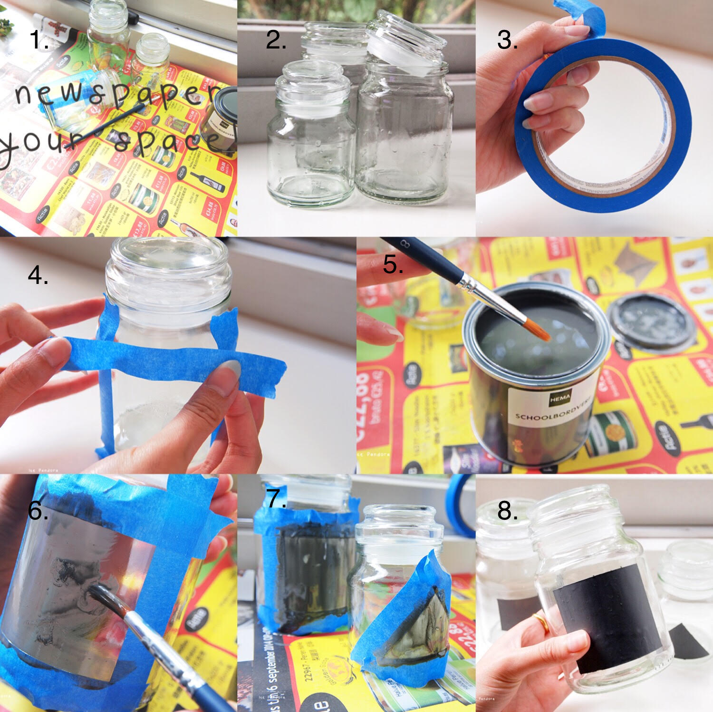
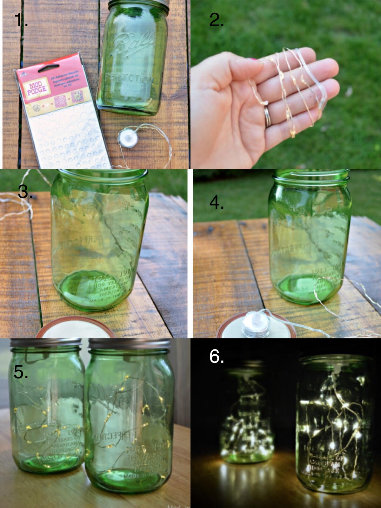

DIY Ideas for Glass Recylables
1. Chalkboard Mason Jars

Tools Needed:
- Clean glass jars
- Chalk paint
- Tape
- Brush
- Water in a bowl
Instructions:
- Use tape to border the area you want to paint on
- Paint the area (multiple layers if needed)
- When dry, peel tape off and you're done!
2. Mason Jar Lights

Tools Needed:
- Any glass jars
- A string of miniature LED ligts
- Adhesive dots
Instructions:
- Clean the mason jar
- Attach the adhesive dot to the cover of the can lid as center as possible
- Peel off the paper back and press the battery pack of the LED strand onto the adhesive dot
- Place the LED lights into the mason jar and close the led